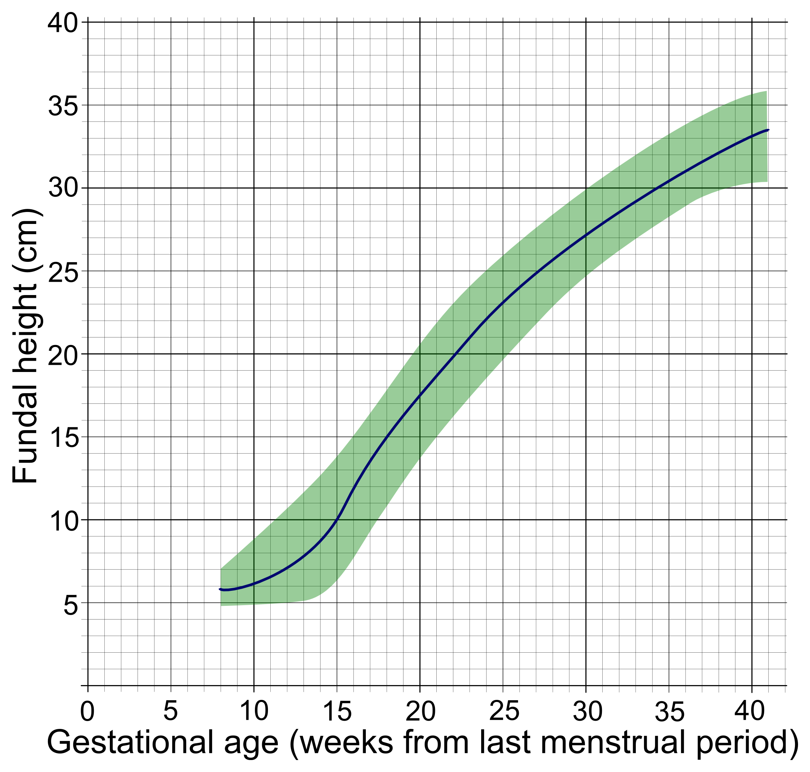

Página 3 · Sofrimento fetal crônico
A idade gestacional é a régua de tudo
Antes de afirmar que o feto é pequeno, de que semana exatamente estamos falando?
Confirmar a idade gestacional é o primeiro passo de tudo
Confirmar a IG é o primeiro passo de tudo. Em obstetrícia, tudo se apoia na idade gestacional — peso esperado, tamanho esperado, conduta, cortes de prematuridade. Por isso confirmar a idade gestacional é o primeiro passo de tudo; todo o resto vem depois.
A datação padrão-ouro e a regra DUM × USG
A datação padrão-ouro e a regra DUM × USG. A datação mais fiel é a ultrassonografia de primeiro trimestre: de 6 a 14 semanas (ou 6 a 13 semanas e 6 dias, com pequena variação na literatura), com embrião já visível a partir de 6 semanas. A regra de decisão é limpa: se a idade pela última menstruação (DUM) concorda com a USG de primeiro trimestre, segue-se a DUM; se há discrepância grande, segue-se a USG de primeiro trimestre. Quanto mais cedo o ultrassom, mais confiável a datação.
A régua fundo × idade gestacional
A régua fundo × IG. Entre 18 e 30 semanas 📏, a altura do fundo uterino concorda com a idade gestacional na proporção de aproximadamente 1 cm por semana: 20 semanas ≈ 20 cm, 25 ≈ 25 cm, 30 ≈ 30 cm. Acima de 30 semanas a precisão cai. Aplicando ao caso: um fundo de 29 cm seria esperado por volta de 29 semanas — mas a Terezinha está com 38. Três centímetros abaixo do esperado sugerem, sem fechar, restrição de crescimento.
Interativo: arraste a semana para ver o fundo esperado.
A concordância ~1 cm/semana só vale entre 18 e 30 semanas. O marcador do caso — 29 cm num eixo de 38 semanas — fica fora da faixa: sugere, sem fechar, restrição de crescimento.A técnica de medir o fundo
A técnica de medir o fundo. Cada centímetro muda o raciocínio, então a técnica importa: fita zerada na borda superior da sínfise púbica, esticada reta, passando pela cicatriz umbilical até o fundo, sem ziguezague. Medida torta inventa doença ou esconde doença.
O percentil 10–90 da caderneta
O percentil 10–90 da caderneta. Na tabela da caderneta de pré-natal, o fundo entre o percentil 10 e o percentil 90 indica crescimento dentro do esperado. Abaixo de p10, acende o alerta que dispara os quatro diferenciais.
Fundo é rastreio, USG é diagnóstico
Fundo é rastreio, USG é diagnóstico. Uma separação que a banca cobra: a medida do fundo é rastreio de baixo custo, útil no acompanhamento de baixo risco; quem efetivamente diagnostica restrição de crescimento no pré-natal é a ultrassonografia. O fundo levanta a suspeita; o ultrassom fecha.
Baixo risco × alto risco — quantos exames
Baixo risco × alto risco — quantos exames. No alto risco, o acompanhamento é feito com ultrassonografia seriada; as condições que exigem esse seguimento incluem hipertensão crônica, diabetes prévio, lúpus e insuficiência renal — repare que a Terezinha entra aqui pela hipertensão. Quanto ao baixo risco, veja a caixa de validação: há duas leituras que a prova pode cobrar.
Cobertura de USG no baixo risco — as duas leituras que a prova pode cobrar
Para a prova, saiba as duas. O ponto sensível: “ecocardiograma fetal de rotina no baixo risco” não bate com a política do MS 2024 — o eco é indicado sob risco aumentado (diabetes prévio, cardiopatia familiar, translucência nucal alterada).
| Idade gestacional (sem) | Fundo uterino esperado (cm) |
|---|---|
| 20 | ~20 |
| 25 | ~25 |
| 30 | ~30 |

A faixa verde é o esperado (≈ p10–p90); entre 18 e 30 semanas vale o atalho “1 cm ≈ 1 semana”, acima disso a precisão cai. Ponto abaixo da faixa levanta restrição, oligodrâmnio ou erro de idade gestacional — rastreio, não diagnóstico.
Mikael Häggström, via Wikimedia Commons — Gestational age and fundal height (2014) · fonte / licença: CC0 1.0 · domínio público
Quiz — fixação
A DUM indica 32 semanas; a USG de primeiro trimestre (feita às 12 semanas) indicava idade compatível com a DUM, sem discrepância. Como datar?
- Gabarito A. Quando DUM e USG de primeiro trimestre concordam, a DUM é seguida.
- B USG tardia é a menos precisa para datar — a precisão cai com a idade; usá-la para datar é o erro.
- C a USG de primeiro trimestre só prevalece quando há discrepância grande — não “sempre”.
- D datar no terceiro trimestre é o pior momento possível (maior erro biológico de tamanho).
Fundo uterino de 25 cm. Em qual idade gestacional isso é esperado, e o que a medida representa?
- Gabarito B. 1 cm ≈ 1 semana entre 18 e 30: 25 cm ≈ 25 semanas; e o fundo é rastreio de baixo custo, não diagnóstico.
- A 25 cm não corresponde a 30 semanas (erra a régua), e fundo não é exame diagnóstico.
- C no alto risco a vigilância é USG seriada — o fundo não a substitui.
- D entre 18 e 30 semanas a correlação é justamente ~1 cm/semana — negá-la ignora a régua-mãe.